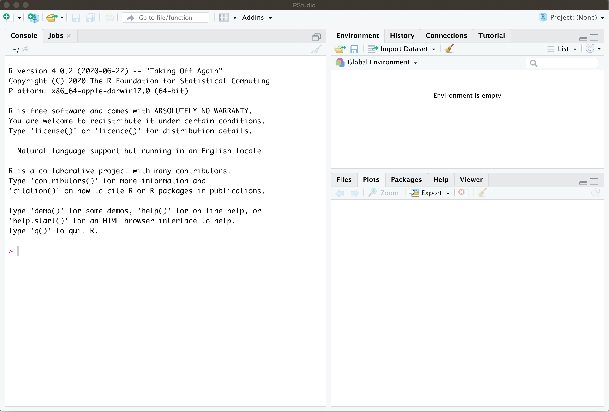
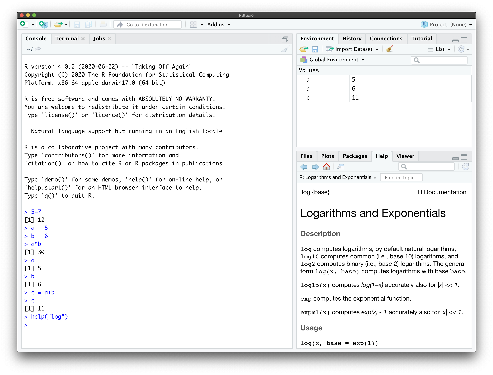
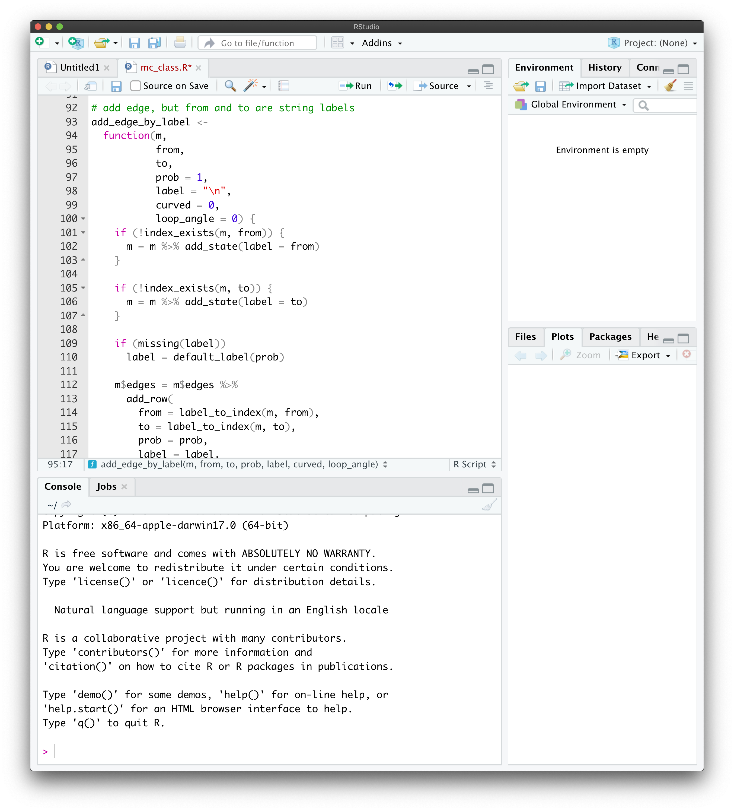
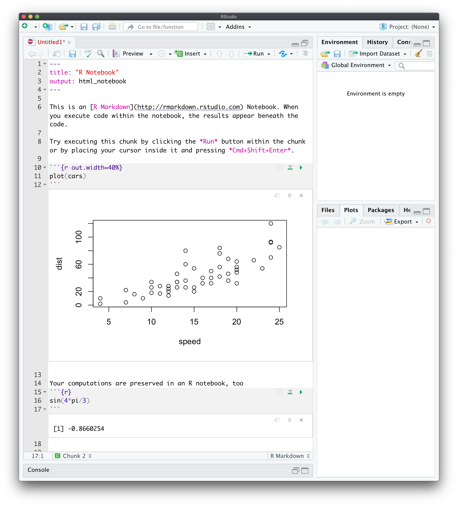

Chapter 1 An intro to R and RStudio
1.1 Setting up an R environment on your computer
1.1.1 Installing R
Learning basic R is an important part of this course, and the first order of business is to download and install an R distribution on your personal computer. We will be using RStudio as an IDE (integrated development environment). Like R itself, it is free and readily available for all major platforms. To download R to your computer, go to https://cloud.r-project.org and download the version of R for your operating system (Windows, Mac or Linux). If you are on a Mac, you want the “Latest release” which, at the time of writing, is 4.1.1, with code name “Kick Things”. On Windows, follow the link “install R for the first time”. We are not going to do any cutting edge stuff in this class, so an older release should be fine, too, if you happen to have it already installed on your system. Once you download the installation file (.pkg on a Mac or .exe on Windows), run it and follow instructions. If you are running Linux, you don’t need me to tell you what to do. Once it is successfully installed, don’t run the installed app. We will use RStudio for that.
1.1.2 Installing RStudio
To install RStudio, go to https://rstudio.com/products/rstudio/download/. There are several versions to choose from - the one you are looking for is “RStudio desktop - Free”. After you download and install it, you are ready to run it. When it opens, you will see something like this

The part on the left is called the console and that is (one of the places) where you enter commands. Before you do, it is important to adjust a few settings. Open the options window by navigating to to Tools->Global Options. In there, uncheck “Restore .RData into workspace on startup” and set “Save workspace to .RData on exit” to “Never”, as shown below:
This way, R will not pollute your environment with values you defined two weeks ago and completely forgot about. These settings are really an atavism and serve no purpose (for users like us) other than to introduce hard-to-track bugs.
There are many other settings you can play with in RStudio, but the two I mentioned above are the only ones that I really recommend setting as soon as you install it.
1.1.3 Installing basic packages
Finally, we need to install several R packages we will be using (mostly implicitly) during the class. First, run the following command in your console
install.packages( "tidyverse")If R asks “Do you want to install from sources the packages which need compilation? (Yes/no/cancel)” answer no.
This will install a number of useful packages and should only take about a minute or two. The next part is a bit longer, and can take up to 15 minutes if you have a slow computer/internet connection.
You only have to do it once, though. Skip both steps involving tinytex below if you have LaTeX already installed on your system1. Start with
install.packages("tinytex")followed by
tinytex::install_tinytex()Note that if you go to the top right corner of each of the code blocks (gray boxes) containing instructions above, an icon will appear. If you click on it, it will copy the content of the box into your clipboard, and you can simply paste it into RStudio. You can do that with any code block in these notes.
1.2 Learning the basics of R
Once R and RStudio are on your computer, it is time to get acquainted with the basics of R. This class is not about the finer points of R itself, and I will try to make your R experience as smooth as possible. After all, R is a tool that will help us explore and understand stochastic processes. Having said that, it is important to realize that R is a powerful programming language specifically created for statistical and probabilistic applications. Some knowledge of R is a valuable skill to have in today’s job market, and you should take this opportunity to learn it. The best way, of course, is by using it, but before you start, you need to know the very basics. Don’t worry, R is very user friendly and easy to get started in. In addition, it has been around for a long time (its predecessor S appeared in 1976) and is extremely well documented - google introduction to R or a similar phrase, and you will get lots of useful hits.
My plan is to give you a bare minimum in the next few paragraphs, and then to explain additional R concepts as we need them. This way, you will not be overwhelmed right from the start, and you will get a bit of a mathematical context as you learn more. Conversely, learning R commands will help with the math, too.
1.2.1 The console, Scripts and R Notebooks
There at least three different ways of inputting commands into R - through console, scripts and R-notebooks.
The console, as I already mentioned, is a window in RStudio where you can enter your R commands one by one. As a command is entered (and enter pressed) R will run it and display the result below. A typical console session looks like this

If you define a variable in a command, it will be available in all the subsequent commands. This way of interacting with R is perfect for quick-and-dirty computations and, what is somewhat euphemistically called “prototyping”. In other words, this way you are using R as a calculator. There is another reason why you might be using the console. It is perfect for package installation and for help-related commands. If you type help('log'), the output will appear in the Help pane on the right. You can also see all the available variables in the Environment pane on the (top) right.
As your needs increase, you will need more complex (and longer) code to meet them. This is where scripts come in. They are text files (but have the extension .R) that hold R code. Scripts can run as a whole, and be saved for later. To create a new script, go to File->New File->R Script. That will split your RStudio window in two:

The top part will become a script editor, and your console will shrink to occupy the bottom part. You can write you code in there, edit and update it, and then run the whole script by clicking on Source, or pressing the associated shortcut key.
Inspired by Python Jupyter notebooks, R notebooks are a creature somewhere between scripts and the console, but also have some features of their own. An R notebook is nothing other than a specially formatted text file which contains chunks of R code mixed with regular text. You can think of these chunks as mini scripts. What differentiates them from scripts is that chunks can be executed (evaluated) and the output becomes a part of the notebook:  R notebooks are R’s implementation of literate programming. The idea is that documentation should be written at the same time as the program itself. As far as this course is concerned, R notebooks are just the right medium for homework and exam submission. You can run code and provide the interpretation of its output in a single document. See here for more information.
Each chapter in these lecture notes is an R notebook!
1.2.2 Asking for help
The most important thing about learning R (and many other things, for that matter) is knowing whom (and how) to ask for help. Luckily, R is a well established language, and you can get a lot of information by simply googling your problem. For example, if you google logarithm in R the top hit (at the time of writing) gives a nice overview and some examples.
Another way to get information about a command or a concept in R is to use the command help. For example, if you input help("log") or ?log in your console, the right hand of your screen will display information on the function log and some of its cousins. Almost every help entry has examples at the bottom, and that is where I always go first.
1.2.3 Vectors
Objects we will be manipulating in this class are almost exclusively vectors and matrices. The simplest vectors are those that have a single component, in other words, numbers. In R, you can assign a number to a variable using two different notations. Both
a <- 1and
a = 1will assign the value \(1\) to the variable a. If you want to create a longer vector, you can use the concatenation operator c as follows:
x = c(1,2,3,4)Once you evaluate the above in your console, the value of x is stored and you can access it by using the command print
print(x)
## [1] 1 2 3 4or simply evaluating x itself:
x
## [1] 1 2 3 4Unlike all code blocks above them, the last two contain both input and output. It is standard not to mark the output by any symbol (like the usual >), and to mark the output by ## which otherwise marks comments. This way, you can copy any code block from these notes and paste it into the console (or your script) without having to modify it in any way. Try it!
We built the vector x above by concatenating four numbers (vectors of length 1). You can concatenate vectors of different sizes, too:
a = c(1,2,3)
b = c(4,5,6)
(x = c(a,b,7))
## [1] 1 2 3 4 5 6 7You may be wondering why I put x = c(a,b,7) in parentheses. Without them, x would still become (1,2,3,4,5,6,7), but its value would not be printed out. A statement in parentheses is not only evaluated, but its result is also printed out. This way, (x = 2+3) is equivalent to x = 2+3 followed by x or print(x).
Vectors can contain things other than numbers. Strings, for example:
(x = c("Picard", "Data", "Geordi"))
## [1] "Picard" "Data" "Geordi"If you need a vector consisting of consecutive numbers, use the colon : notation:
1:10
## [1] 1 2 3 4 5 6 7 8 9 10For sequences of equally spaced numbers, use the command seq (check its help for details)
seq(from=5, to=20, by=3)
## [1] 5 8 11 14 17 20An important feature or R is that many of its functions are vectorized. That means that if you give such a function a vector as an argument, the returned value will be a vector of results of that operation performed element by element. For example
x = c(10,20,30)
y = c(2,4,5)
x+y
## [1] 12 24 35
x*y
## [1] 20 80 150
x^2
## [1] 100 400 900
cos(x)
## [1] -0.8390715 0.4080821 0.1542514The vectors do not need to be of the same size. R uses the recycling rule - it recycles the values of the shorter one, starting from the beginning, until its size matches the longer one:
x = c(10, 20, 30, 40, 50, 60)
y= c(1,3)
x+y
## [1] 11 23 31 43 51 63The case where the shorter vector is of length 1 is particularly useful:
x = c(10,20,30,40)
x+1
## [1] 11 21 31 41
x*(-2)
## [1] -20 -40 -60 -80Extracting parts of the vector is accomplished by using the indexing operator []. Here are some examples (what do negative numbers do?)
x = c(10,20,30,40,50)
x[1]
## [1] 10
x[c(1,2)]
## [1] 10 20
x[-1]
## [1] 20 30 40 50
x[-c(3,4)]
## [1] 10 20 50
x[1:4]
## [1] 10 20 30 40
x[c(1,1,2,2,5,4)]
## [1] 10 10 20 20 50 40People familiar with Python should be aware of the following two differences: 1. indexing starts at 1 and not 0, and 2. negative indexing removes components; it does not start counting from the end!
It is important to note that the thing you put inside [] needs to be a vector itself. The above examples all dealt with numerical indices, but you can use logical indices, too. A variable is said to be logical or Boolean if it can take only one of the two values TRUE or FALSE. A vector whose components are all logical, are called, of course, logical vectors. You can think of logical indexing as the operation where you go through your original vector, and choose which components you want to keep (TRUE) and which you want the throw away (FALSE). For example
x = c(10,20,30,40,50)
y = c(TRUE, FALSE, FALSE, TRUE, TRUE)
x[y]
## [1] 10 40 50This is especially useful when used together with the comparison operators. The expressions like x < y or x == y are operators2 in R, just like x + y or x / y. The difference is that < and == return logical values. For example
1 == 2
## [1] FALSE
3 > 4
## [1] FALSE
3 >= 2
## [1] TRUEThese operators are vectorized, so you can do things like this
x = c( 1,2,3,4,5)
y = c( 1,3,3,2,5)
x==y
## [1] TRUE FALSE TRUE FALSE TRUEor, using recycling,
x = c(1,2,3,4,5)
x > 3
## [1] FALSE FALSE FALSE TRUE TRUELet’s combine that with indexing. Suppose that we want to keep only the values greater than 4 in the vector x. The vector y = ( x > 4 ) is going to be of the same length as x and contain logical values.
When we index x using it, only the values of x on positions where x > 4 will survive, and these are exactly the values we needed:
x = c(3,2,5,3,1,5,6,4)
y = (x>4)
x[y]
## [1] 5 5 6or, simply,
x[x>4]
## [1] 5 5 6Indexing can be used to set the values of a vector just as easily
x = c( 10, 20, 30, 40, 50)
x[2:4] = c( 0, 1 ,2)
x
## [1] 10 0 1 2 50Recycling rules apply in the same way as above
x = c(10,20,30,40,50)
x[ c(1,2,5) ] = 7
x
## [1] 7 7 30 40 71.2.4 Matrices
A matrix in R can be created using the command matrix. The unusual part is that the input is a vector and R populates the components of the matrix by filling it in column by column or row by row. As always, an example will make this clear
x = c(1,2,3,4,5,6)
(A = matrix(x, nrow = 2, ncol = 3, byrow = TRUE))
## [,1] [,2] [,3]
## [1,] 1 2 3
## [2,] 4 5 6The first argument of the function matrix is the vector which contains all the values. If you want a matrix with m rows and n columns, this vector should be of size \(m n\). The arguments ncol and nrow are self-explanatory, and byrow is a logical argument which signals whether to fill by columns or by rows. Here is what happens when we set byrow = FALSE
x = c(1,2,3,4,5,6)
(A = matrix(x, nrow = 2, ncol = 3, byrow = FALSE))
## [,1] [,2] [,3]
## [1,] 1 3 5
## [2,] 2 4 6Accessing components of a matrix is as intuitive as it gets
(A = matrix( c(1, -1, 7, 2), nrow = 2, ncol = 2))
## [,1] [,2]
## [1,] 1 7
## [2,] -1 2
A[1,2]
## [1] 7Note that I did not use the argument byrow at all. In such cases, R always uses the default value (documented in the function’s help). For matrix the default value of byrow is FALSE, i.e., it fills the matrix column by column. This is not what we usually want because we tend to think of matrices as composed of rows. Moral: do not forget byrow = TRUE if that is what you, indeed, want.
Usual matrix operations can be performed in R in the obvious way
(A = matrix( c(1, -1, 7, 2), nrow = 2, ncol = 2))
## [,1] [,2]
## [1,] 1 7
## [2,] -1 2
(B = matrix( c(2, 2, -3, -4), nrow = 2, ncol = 2))
## [,1] [,2]
## [1,] 2 -3
## [2,] 2 -4
A+B
## [,1] [,2]
## [1,] 3 4
## [2,] 1 -2You should be careful with matrix multiplication. The naive operator * yields a matrix, but probably not the one you want (what does * do?)
(A = matrix( c(1, 2, 0, 1), nrow = 2, ncol = 2))
## [,1] [,2]
## [1,] 1 0
## [2,] 2 1
(B = matrix( c(3, 5, 1, 0), nrow = 2, ncol = 2))
## [,1] [,2]
## [1,] 3 1
## [2,] 5 0
A*B
## [,1] [,2]
## [1,] 3 0
## [2,] 10 0If you want the matrix product, you have to use %*%
A%*%B
## [,1] [,2]
## [1,] 3 1
## [2,] 11 21.2.5 Functions
The following syntax is used to define functions in R:
my_function = function(x,y,z) {
return(x+y+z)
}The function my_function returns the sum of its arguments. Having defined it, as above, we can use it like this
my_function(1,3,9)
## [1] 13Neither the output nor the arguments of a function in R are restricted to numbers. Our next example function, named winners, takes two vectors as arguments and returns a vector. Its components are those components of the first input vector (x) that are larger than the corresponding components of the second input vector (y)
winners = function(x,y) {
z = x>y
return(x[z])
}
winners( c(1,4,5,6,2), c(2,3,3,9,2))
## [1] 4 5Note how we used several things we learned above in this function. First, we defined the logical vector which indicates where x is larger than y. Then, we used logical indexing to return only certain components of x.
1.2.6 If-else statements
The syntax of the if statement is
if (condition) {
statement
}where condition is anything that has a logical value, and statement is any R statement. First R evaluates condition. If it is true, it runs statement. If it is false, nothing happens. If you want something to happen if (and only if) your condition is false, you need an if-else statement:
if (condition) {
statement1
} else {
statement2
}This way, statement1 is evaluated when condition is true and statement1 when it is false. Since conditions inside the if statement return logical values, we can combine them using ands, ors or nots. The R notation for these operations is &, | and ! respectively, and to remind you what they do, here is a simple table
| x | y | x & y (and) | x | y (or) | !x (not) |
|---|---|---|---|---|
| TRUE | TRUE | TRUE | TRUE | FALSE |
| TRUE | FALSE | FALSE | TRUE | FALSE |
| FALSE | TRUE | FALSE | TRUE | TRUE |
| FALSE | FALSE | FALSE | FALSE | TRUE |
Let’s put what we learned about functions and if-else statements together to write a function distance_or_zero whose arguments are coordinates x and y of a point in the plane, and whose output is the distance from the point (x,y) to the origin if this distance happens to be between 1 and 2, and and 0 otherwise. We will use similar functions later when we discuss Monte Carlo methods:
distance_or_zero = function(x,y){
distance = sqrt(x^2+y^2)
if (distance <= 2 & distance >=1) {
return(distance)
} else {
return(0)
}
}
distance_or_zero(1.2,1.6)
## [1] 2
distance_or_zero(2,3)
## [1] 01.2.7 For loops
We use for loops when we want to repeat a particular block of code in prespecified instances. The syntax of the for loop is
for (counter in vector) {
block
}where counter stands for a “dummy” variable, vector is a vector containing the possible values the “dummy” variable runs through, and block is any block of R code.
For example, let’s create a vector of squares of the first 10 prime numbers.
primes = c(2,3,5,7,11,13,17,19,23,29)
squared.primes=c()
for (x in primes){
squared.primes=c(squared.primes, x^2)
}
squared.primes
## [1] 4 9 25 49 121 169 289 361 529 841Of course, the above toy example is for illustrative purposes only since in R we could easily have done the following:
primes = c(2,3,5,7,11,13,17,19,23,29)
squared.primes.quick=primes^2
squared.primes.quick
## [1] 4 9 25 49 121 169 289 361 529 8411.2.8 While loops
while loops come in handy when we need a specific block of code repeated while a particular condition is satisfied (or, equivalently, until a contrarty condition is met). The syntax of the while loop is:
while (condition) {
block
}where condition is anything that has a logical value, and block is any block of R code. First R evaluates condition. If it is true, it runs block. This pair od procedures will be repeated until the condition becomes false. Note that, as opposed to the for loop, if one is not careful, the while loop can easily run forever!
Here is a chunk of code defining a function which lists all the divisors any number smaller than 100. To verify that the function is well defined, we evaluate it at a few values.
factors = function(x){
if (x>100){
print("The entry is too big!")
} else {
i = 1
while (i<= x) {
if (x/i==floor(x/i)){
print(i)
}
i=i+1
}
}
}
factors(32)
## [1] 1
## [1] 2
## [1] 4
## [1] 8
## [1] 16
## [1] 32
factors(44)
## [1] 1
## [1] 2
## [1] 4
## [1] 11
## [1] 22
## [1] 44
factors(161)
## [1] "The entry is too big!"Note the line i=i+1 in the above code. That is the line which allows the condition of the while loop to update at every cycle through the loop and to eventually exit the loop. Also note the use of the command floor. The command returns the largest integer smaller than or equal to its argument.
1.3 Additional Problems for Chapter 1
Here are several simple problems. Their goal is to give you an idea of exactly how much R is required to get started in this course.
Problem 1.1 Compute the following (your answer should be a decimal number):
- \(1/238746238746\)
- \(2^{45}\)
- \(3^{28}\)
- \(\sqrt{15}\)
- \(\cos(\pi/8)\)
- \(e^2\)
- \(\log(2)\) (the base is \(e\))
- \(\log_{10}(2)\) (the base is \(10\))
- \(\sqrt[3]{ \frac{1342.16-2.18}{(3 \pi + 4.12)^2}}\)
Note: some of the answers will look like this 3.14e+13. If you do not know what that means, google scientific notation or E notation.
Click for Solution
Solution. Remember, parentheses around the whole expression tell R to print out the result
(1/238746238746)
## [1] 0.000000000004188548
(2^(45)) # this is the same as 2**45
## [1] 35184372088832
(3^(28))
## [1] 22876792454961
(sqrt(15))
## [1] 3.872983
(cos(pi/8))
## [1] 0.9238795
(exp(2))
## [1] 7.389056
(log(2))
## [1] 0.6931472
(log10(2))
## [1] 0.30103
(((1342.16-2.18)/(3*pi +4.12)^2)^(1/3))
## [1] 1.940222Problem 1.2
Define two variables \(a\) and \(b\) with values \(3\) and \(4\) and “put” their product into a variable called \(c\). Output the value of \(c\).
Define two vectors \(x\) and \(y\) of length \(3\), such that the components of \(x\) are \(1,2,3\) and the components of \(y\) are \(8,9,0\). Ouput their (componentwise) sum.
Define a \(2\times 2\) matrix \(A=\begin{pmatrix} 1 & 2 \\ -1 & 3 \end{pmatrix}\).
Compute the matrix square \(A^2\).
Click for Solution
Solution.
a=3 b=4 (c=a*b) ## [1] 12x=c(1,2,3) y=c(8,9,0) (x+y) ## [1] 9 11 3(A=matrix(c(1,2,-1,3), byrow=TRUE, nrow=2)) ## [,1] [,2] ## [1,] 1 2 ## [2,] -1 3Note that we need to use
%*%for matrix multiplication. If we used*we would get the “entry-by-entry” product:(A %*% A) ## [,1] [,2] ## [1,] -1 8 ## [2,] -4 7 (A * A) ## [,1] [,2] ## [1,] 1 4 ## [2,] 1 9
Problem 1.3
Construct a vector \(x\) which contains all numbers from \(1\) to \(100\).
Construct a vector \(y\) which contains squares of all numbers between \(20\) and \(2000\).
Construct a vector \(z\) which contains only those components of \(y\) whose values are between \(400,000\) and \(500,000\).
Compute the average (arithmetic mean) of all the components of \(z\). There is an R function that does that for you - find it!
Click for Solution
Solution.
x = 1:100y = (20:2000)^2(z=y[y>400000 & y<500000]) ## [1] 400689 401956 403225 404496 405769 407044 408321 409600 410881 412164 ## [11] 413449 414736 416025 417316 418609 419904 421201 422500 423801 425104 ## [21] 426409 427716 429025 430336 431649 432964 434281 435600 436921 438244 ## [31] 439569 440896 442225 443556 444889 446224 447561 448900 450241 451584 ## [41] 452929 454276 455625 456976 458329 459684 461041 462400 463761 465124 ## [51] 466489 467856 469225 470596 471969 473344 474721 476100 477481 478864 ## [61] 480249 481636 483025 484416 485809 487204 488601 490000 491401 492804 ## [71] 494209 495616 497025 498436 499849(mean(z)) ## [1] 449368.7
Problem 1.4
Write a function that takes a numerical argument \(x\) and returns \(5\) if \(x\geq 5\) and \(x\) itself otherwise.
Write a function that returns
TRUE(a logical value) if its argument is between \(2\) and \(3\) andFALSEotherwise.(Extra credit) Write a function that takes two equal-sized vectors as arguments and returns the angle between them in degrees. For definiteness, the angle between two vectors is defined to be \(0\) when either one of them is \((0,0,\dots,0)\).
Click for Solution
Solution.
f = function(x) { if (x>5) { return(5) } else { return(x) } }This could be made shorter using the function
ifelse:f = function(x) ifelse(x>5,5,x)g <- function(x) { if (x>2 & x<3) { return(TRUE) } else { return(FALSE) } } # more R-ic (what's "Pythonic", but for R?) g <- function(x) x>2 & x<3angle <- function(x,y) { length_x = sqrt(sum(x**2)) length_y = sqrt(sum(y**2)) if (length_y == 0 | length_x == 0) { return(0) } else { inn_prod = sum(x*y) cos_alpha = inn_prod/(length_x * length_y) return(acos(cos_alpha)/pi*180) } } # some testing # should be 0 (angle( c(1,1), c(1,1) ) ) ## [1] 0.000001207418 # should be 0 (angle( c(0,0), c(1,2))) ## [1] 0 # should be 45 (angle( c(0,1), c(1,1))) ## [1] 45 # should be 90 (angle( c(1,0), c(0,1))) ## [1] 90Note: This function may fail for certain (rare) values of arguments because the variable
cos_alphamay happen to take a value slightly larger than \(1\) or slightly smaller then \(-1\) due to rounding errors. When applied to such a valueacoswill return aNaN. For simplicity, all of this is ignored in the solution above.